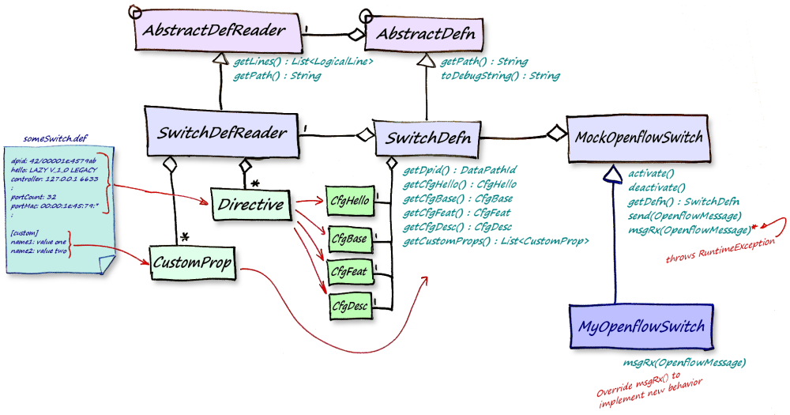

The following schematic illustrates the relationship of classes that are
used in composing a mock switch.
The MockOpenflowSwitch uses a SwitchDefn which,
in turn, uses a SwitchDefReader to parse a text-based
definition file that describes the characteristics of the mock-switch.
